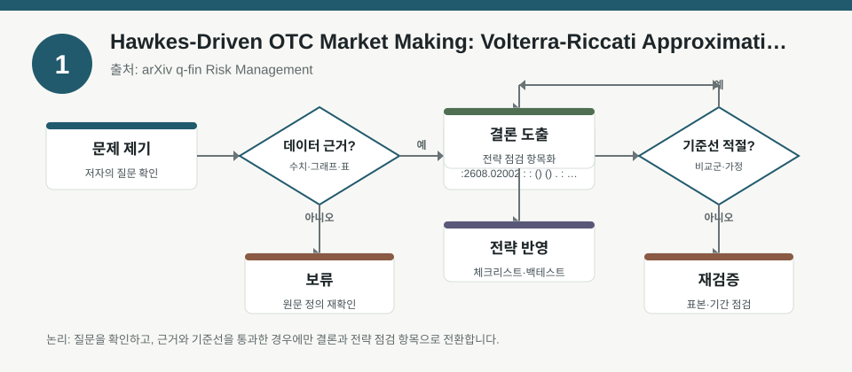
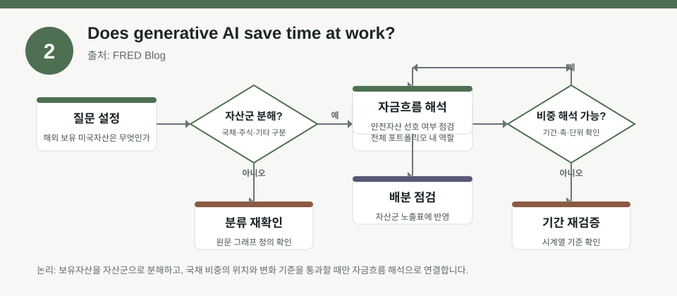
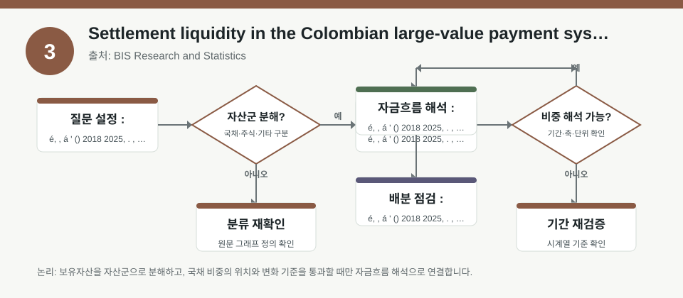

핵심 요약
- 결론: 세 자료 모두 한국 투자자가 바로 매매 신호로 읽기보다, FX·유동성·생산성·결제지연 같은 위험 요인을 점검하는 체크리스트로 해석하는 것이 적절합니다.
- 원칙: 수치가 메타데이터에 없으면 사실로 단정하지 말고, 백테스트 가정·표본·측정 방식은 원문에서 반드시 검증해야 합니다.
주목할 자료
| 번호 | 자료 | 출처 | 원문 | 핵심 내용 | 데이터 포인트 | 리스크/한계 |
|---|---|---|---|---|---|---|
| 1 | Hawkes-Driven OTC Market Making: Volterra-Riccati Approximation | arXiv q-fin Risk Management | 원문 보기 | OTC RFQ 도착과 체결을 Hawkes 자기흥분 구조로 모델링해 FX 시장조성 위험을 분석합니다. | FX RFQ 도착 강도, 체결 thinning, 자기상관/군집, 재고·스프레드 리스크 | spot-FX RFQ 데이터 기반 추정이므로 다른 자산군·거래소시장으로 일반화 가능한지 확인이 필요합니다. |
| 2 | Does generative AI save time at work? | FRED Blog | 원문 보기 | 생성형 AI 사용 확대와 업무 시간 절감 체감에 관한 설문 데이터를 소개합니다. | AI 사용 빈도, 절감 시간, 설문 응답 기반 생산성 지표 | 설문 기반 자기보고 데이터라 실제 생산성·이익 기여와의 괴리를 검증해야 합니다. |
| 3 | Settlement liquidity in the Colombian large-value payment system: the role of reserve requirements | BIS Research and Statistics | 원문 보기 | 지급준비율 변화가 대규모 결제시스템의 당일 유동성 관리와 거래 시점을 어떻게 바꾸는지 분석합니다. | 결제 타이밍, 유동성 배치, 준비금 제약, 고빈도 거래 흐름 | 콜롬비아 제도·데이터에 한정되므로 한국의 지급결제·금리 환경에 그대로 이식하면 안 됩니다. |
자료별 상세
1. Hawkes-Driven OTC Market Making: Volterra-Riccati Approximation

- 핵심: RFQ가 서로 영향을 주고받는 자기흥분형 흐름이면, 체결 리스크와 재고 리스크가 동시에 커질 수 있다는 점을 수학적으로 다룹니다.
- 데이터 포인트: FX RFQ 도착 강도와 군집성, 체결 확률의 thinning, 스프레드·재고 관리가 핵심 변수입니다.
- 리스크: spot-FX RFQ 데이터에 맞춘 설정이므로 KOSPI/KOSDAQ 개별 종목이나 국내 장내시장에 그대로 적용되는지 검수해야 합니다.
- 투자전략 반영 예시: 한국 투자자는 환율 민감 업종, 해외 ETF, 수출주 비중 점검 시 “거래량 급증 구간의 변동성 확대”를 포트폴리오 점검 항목으로 둘 수 있습니다.
- 실행 예시: 최근 20거래일 기준으로 환율 민감 종목군과 지수선물의 거래량 급증일을 분리해, 변동성·스프레드 확대 구간이 수익률 분산에 미친 영향을 사후 점검합니다.
2. Does generative AI save time at work?

- 핵심: 생성형 AI의 확산 자체보다, 실제로 얼마나 자주 쓰이고 얼마나 시간을 절감했다고 응답했는지가 생산성 해석의 중심입니다.
- 데이터 포인트: 설문 응답 기반의 사용 빈도와 시간 절감 체감치가 핵심이며, 실적·임금·업무량과의 연결은 별도 검증이 필요합니다.
- 리스크: 자기보고 설문은 과대평가·선택편향이 있을 수 있어, 기업 이익률 개선이나 업종별 생산성 향상으로 바로 연결하면 안 됩니다.
- 투자전략 반영 예시: 한국 투자자는 소프트웨어·플랫폼·광고·반도체 업종을 볼 때 AI 도입 공시와 실제 비용 구조 변화를 분리해 체크할 수 있습니다.
- 실행 예시: 보유 관심종목별로 AI 활용이 “업무시간 절감”인지 “매출 증가”인지 구분해, 실적발표에서 확인할 질문 목록을 미리 작성합니다.
3. Settlement liquidity in the Colombian large-value payment system: the role of reserve requirements

- 핵심: 지급준비율 완화나 강화가 결제시점과 유동성 배치를 바꿔, 금융기관의 intraday liquidity risk에 영향을 줄 수 있음을 보여줍니다.
- 데이터 포인트: 고빈도 결제흐름, 준비금 제약, 거래 시간대 이동, 유동성 버퍼 확보가 핵심 관찰 대상입니다.
- 리스크: 콜롬비아 대형지급시스템 사례이므로 한국의 은행채·콜금리·레포·지준 운용 구조와 차이를 반드시 확인해야 합니다.
- 투자전략 반영 예시: 한국 투자자는 은행·증권·카드·인터넷은행 관련 노출을 볼 때 규제 변화가 단기 유동성 비용과 자금조달 안정성에 미칠 영향을 점검할 수 있습니다.
- 실행 예시: 금리·유동성 스트레스 상황을 가정해 금융 섹터 비중과 현금성 자산 비중, 환율 변동 시 해외조달비용 민감도를 함께 체크합니다.
팩터·리스크·포트폴리오 관점
- 핵심: 세 자료는 각각 FX 미시구조, 생산성 서베이, 결제 유동성이라는 서로 다른 축을 다루지만, 공통적으로 “관측된 데이터가 무엇을 대표하는가”를 먼저 따져야 합니다.
- 검수: 표본이 RFQ·설문·국가별 지급결제에 한정되므로, 팩터 노출과 리스크 프리미엄을 읽을 때 자산군·국가·제도 차이를 분리해 검증해야 합니다.
정리
- 결론: 이번 자료들은 한국 투자자에게 매매 결론보다, 환율·유동성·정책·생산성 변수의 해석 틀을 제공하는 참고자료로 보는 편이 안전합니다.
- 다음 확인: 원문에서 표본 범위, 추정식, 변수 정의, 기간 분할, 외삽 가능성, 백테스트 포함 여부를 우선 확인해야 합니다.